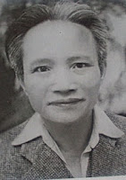

Chương II

ó lần tôi hỏi anh Học:
- Tư tưởng cách mệnh của mày nẩy ra từ hồi nào?
Anh đáp:
- Từ năm độ lên mười tuổi. Hồi ấy tao còn lọc chữ Nho ở nhà quê. Xong buổi học lại đi chăn trâu, và nhiều hôm chăn sang đến đầu làng bên cạnh. Làng ấy là quê ông Đội Cấn. Ông Cấn chết đi, còn để lại mẹ già. Bà cụ thương con quá, hoá như kẻ dở người. Hễ gặp chúng tao là bà cụ lại ôm choàng lấy, vừa khóc vừa nói: “Các cậu! Các cậu! Làm thế nào báo được thù cho con tôi. Tao còn bé, mỗi khi gặp bà cụ là lòng lại hồi hồi! Rồi nghĩ, chỉ có đạp đổ chế độ thực dân mới trả hộ được thù cho con bà cụ! Đấy, tư tưởng cách mạng nẩy ra ở trong óc tao từ đấy!
Thì ra một bà cụ dở người đã đúc được lai đứa con anh hùng sắt máu!
Một đứa con ruột thịt, là nhà chi huy việc đánh Thái Nguyên! Một đứa con tinh thần là người tạo nhân cuộc khởi nghĩa Yên Bái.

Nhượng Tống
Trước sau hơn mười năm, hai đứa con bà đã làm vẻ vang cho cả một dân tộc!
Nghĩ đến bà, lòng ta cảm khái bao nhiêu!
Tuy vậy, năm mười tuổi, anh mới được bà gieo vào óc cái hạt giống tự do đó mà thôi. Hạt giống ấy, còn phải vun tưới ròng rã trên mười năm nữa, bằng những máu nóng, lệ nóng của đồng bào, bằng những gió dập, mưa dồn chung quanh tổ quốc, nó mới đến lúc khai hoa, kết quả.
Ấy là năm 1926…